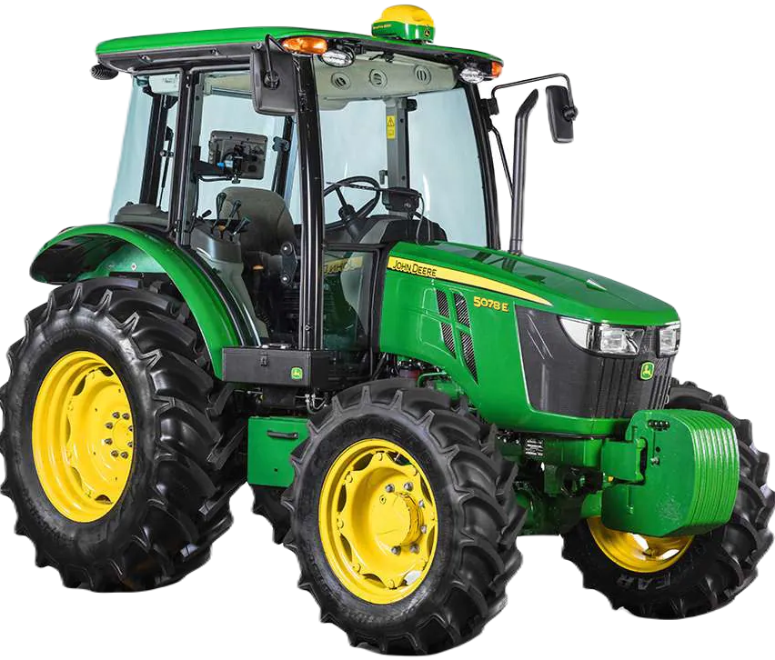
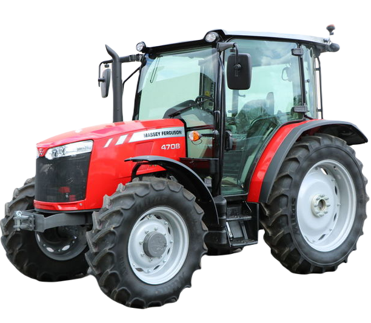
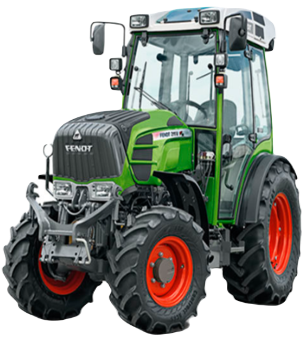
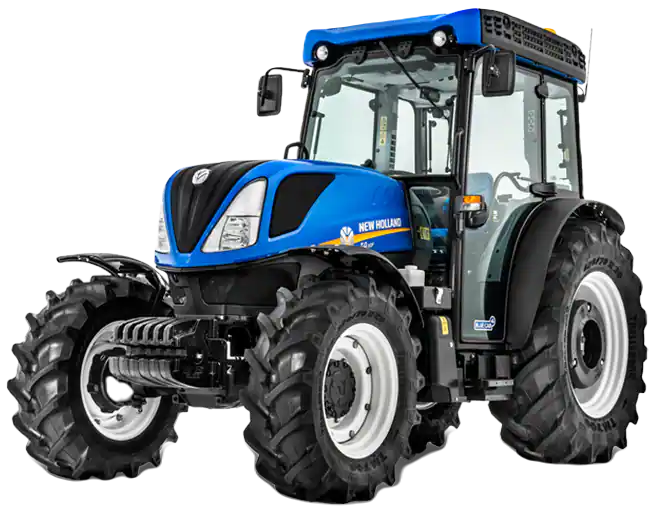
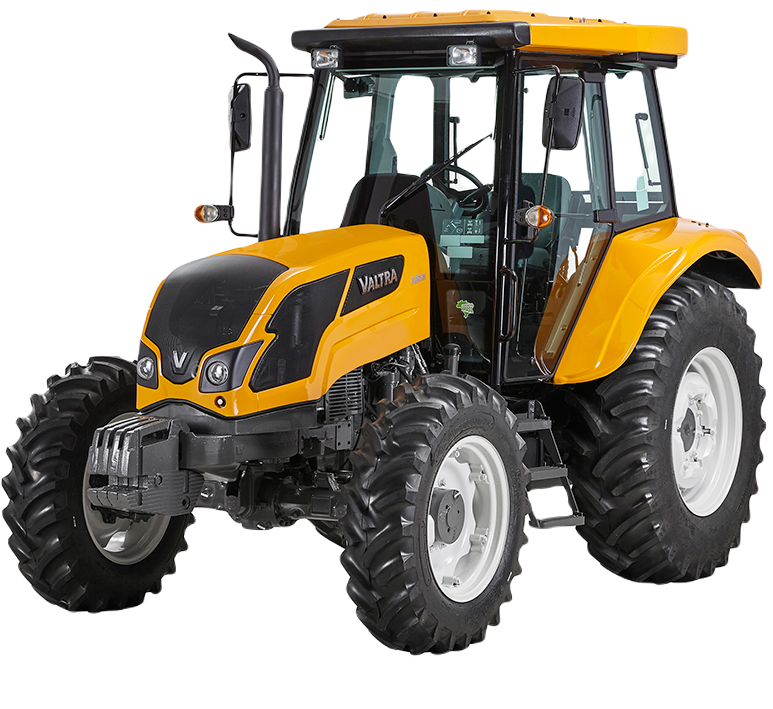

-
John Deere 5078E
CV 78
Descrição
Um trator versátil, pode ser tanto cabinado quanto plataformado. Ideal para realização de grande parte das operações diárias das propriedades de médio porte, conta com equipamentos passíveis de acoplar lâminas ou carregadoras frontais, roçadeiras ou outros acessórios disponíveis e compatíveis presentes no mercado de máquinas e implementos agrícolas. Para os produtores que adquirirem este equipamento em uma das concessionárias da rede, o fabricante fornece garantia de 3 anos ou 2000h de uso, desde que sejam seguidas as manutenções com peças e serviços via concessionário.
-
Massey Ferguson 4707
CV 79
Descrição
Esse trator vem se destacando no mercado pela possibilidade de sair configurado cabinado ou não, além de oferecer capacidade opcional de telemetria para melhor gestão do equipamento. Com motor aspirado AGCO Power de 3 cilindros e turbo intercooler, o equipamento merece destaque pela sua capacidade de entrega de potência e grande eficiência no consumo de combustível.
-
Fendt 207 vario
CV 79
Descrição
O Fendt 207 Vario é conhecido por ser um trator compacto e ligeiro com máxima manobrabilidade e alto rendimento.
-
New Holland T4
CV 88
Descrição
O trator New Holland T4 é lider mundial na categoria de estreitos. Essa é uma linha especial, desenvolvida para culturas específicas, como cafeicultura e fruticultura, que necessitam de dimensões reduzidas.
-
Valtra A2R
CV 89
Descrição
A versatilidade desse trator fica por conta das opções de transmissão. Uma máquina multiuso no campo, disponível em 4 versões: Standard, para transmissão de simples operação; Multiplicador, para quem busca precisão na velocidade de trabalho; Redutor, para aqueles que precisam de alto torque em baixas velocidades de deslocamento; e Reversão Mecânica, para mais agilidade nas manobras.